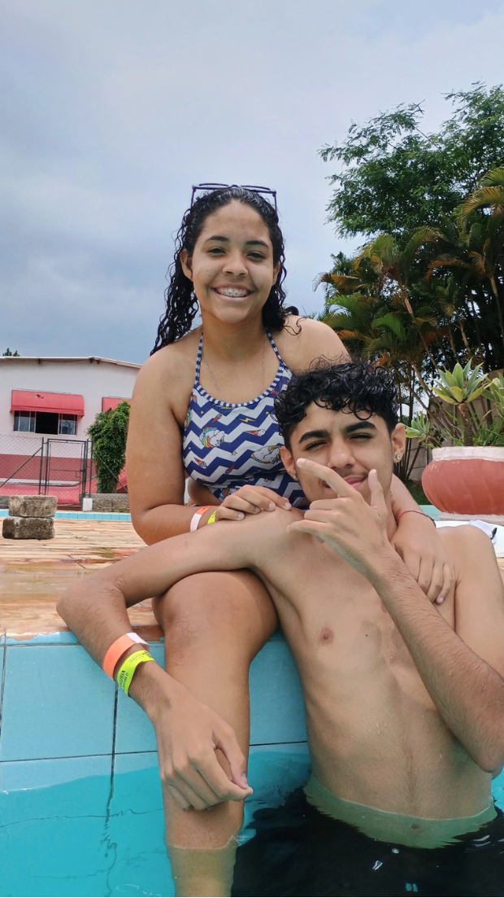
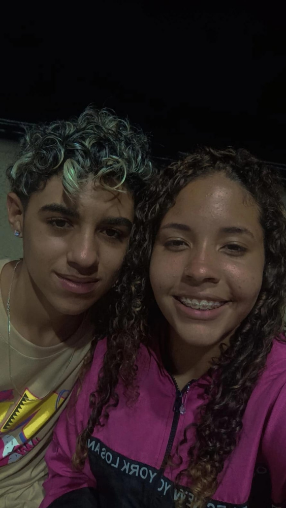
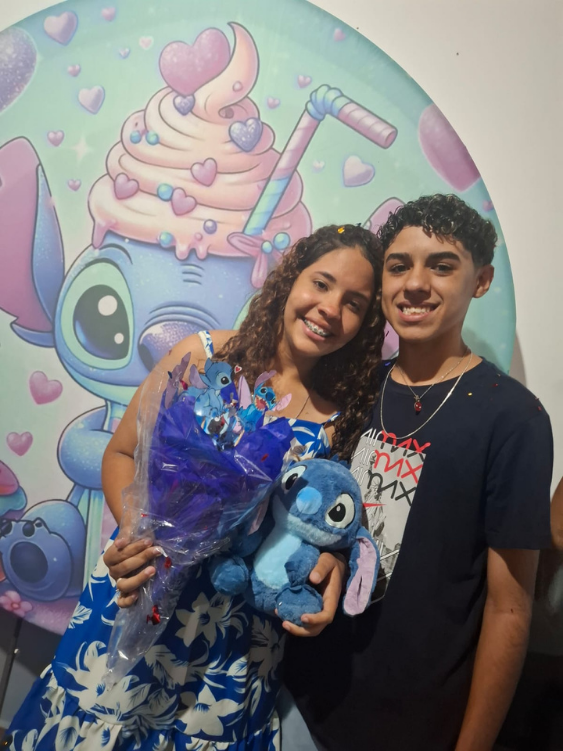
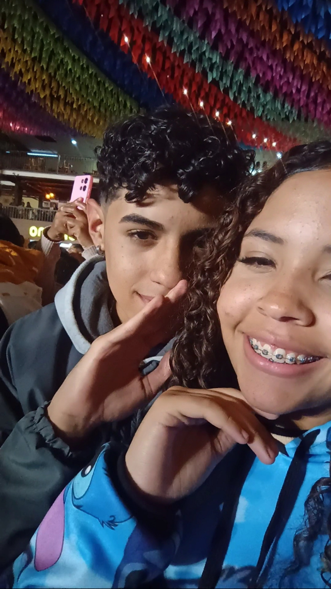
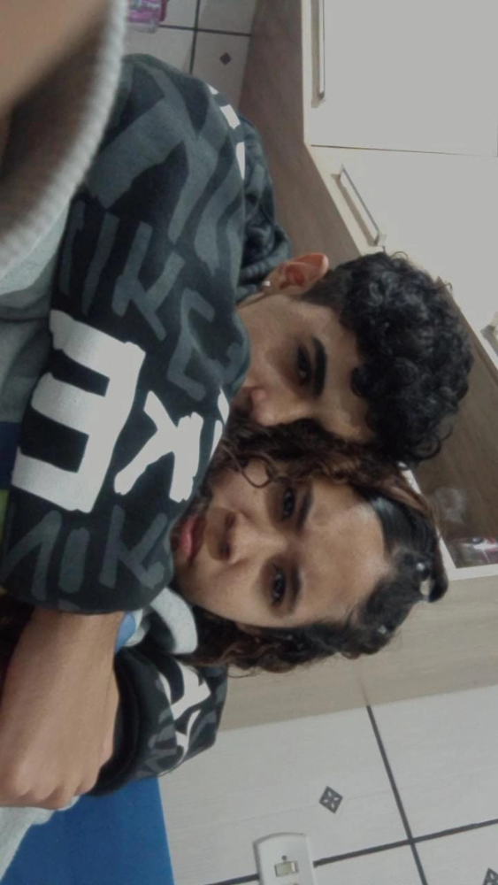

Nossa Linha do Tempo
🗓️ Onde tudo começou
Onde tudo começou, e não dá pra negar que eu já estava me apaixonando por ti. Desde esse dia, meu coração já acelerava só de estar perto de ti!
30 de novembro de 2024🙏 Juntos no caminho de Deus
Juntos até no caminho de Deus, onde nossa história com Deus começa!
8 de dezembro de 2024✨ Primeiro Ano Novo Juntos

Aqui já estava completamente apaixonado por ti, primeiro final de ano juntos, 00h, e eu estava ao seu lado!
1 de janeiro de 2025✈️ Nossa Primeira Viagem
A primeira viagem a gente nunca esquece, e essa nunca vou esquecer. Momentos incríveis tive com você nesses dias!
4 de janeiro de 2025🎂 Seu Aniversário, Meu Amor!
Seu aniversário, dia em que Deus e a minha sogra me deram o amor da minha vida, e eu estou ao seu lado, como sempre prometido!
10 de maio de 2025🎤 Nosso Primeiro Show
5 meses juntos já, e nosso primeiro show! Uma das melhores experiências que já tive, e você esteve lá!
30 de maio de 2025🚗 Depois da Longa Viagem
Juntos, depois de uma longa viagem, algumas brigas ksks, mas você sendo quem está ao meu lado!
22 de julho de 2025💖 Hoje, Juntos e Felizes!
Hoje estamos aqui, juntos, felizes, num passeio que será lembrado para sempre, e você ainda sim, é o grande amor da minha vida!!
26 de julho de 2025Nossas Músicas do Coração 🎶
A trilha sonora do nosso amor. Aperta o play e sente a vibe!